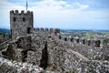

Multimédia
Fotografias
Vídeo
Poema
Ao volante do Chevrolet pela estrada de Sintra
Ao volante do Chevrolet pela estrada de Sintra, Ao luar e ao sonho, na estrada deserta, Sozinho guio, guio quase devagar, e um pouco Me parece, ou me forço um pouco para que me pareça, Que sigo por outra estrada, por outro sonho, por outro mundo, Que sigo sem haver Lisboa deixada ou Sintra a que ir ter, Que sigo, e que mais haverá em seguir senão não parar mas seguir? Vou passar a noite a Sintra por não poder passá-la em Lisboa, Mas, quando chegar a Sintra, terei pena de não ter ficado em Lisboa. Sempre esta inquietação sem propósito, sem nexo, sem consequência, Sempre, sempre, sempre, Esta angústia excessiva do espírito por coisa nenhuma, Na estrada de Sintra, ou na estrada do sonho, ou na estrada da vida… Maleável aos meus movimentos subconscientes no volante, Galga sob mim comigo, o automóvel que me emprestaram. Sorrio do símbolo, ao pensar nele, e ao virar à direita. Em quantas coisas que me emprestaram eu sigo no mundo! Quantas coisas que me emprestaram guio como minhas! Quanto que me emprestaram, ai de mim!, eu próprio sou! À esquerda o casebre — sim, o casebre — à beira da estrada. À direita o campo aberto, com a lua ao longe. O automóvel, que parecia há pouco dar-me liberdade, É agora uma coisa onde estou fechado, Que só posso conduzir se nele estiver fechado, Que só domino se me incluir nele, se ele me incluir a mim. À esquerda lá para trás o casebre modesto, mais que modesto. A vida ali deve ser feliz, só porque não é a minha. Se alguém me viu da janela do casebre, sonhará: Aquele é que é feliz. Talvez à criança espreitando pelos vidros da janela do andar que está em cima Fiquei (com o automóvel emprestado) como um sonho, uma fada real. Talvez à rapariga que olhou, ouvindo o motor, pela janela da cozinha No pavimento térreo, Sou qualquer coisa do príncipe de todo o coração de rapariga, E ela me olhará de esguelha, pelos vidros, até à curva em que me perdi. Deixarei sonhos atrás de mim, ou é o automóvel que os deixa? Eu, guiador do automóvel emprestado, ou o automóvel emprestado que eu guio? Na estrada de Sintra ao luar, na tristeza, ante os campos e a noite, Guiando o Chevrolet emprestado desconsoladamente, Perco-me na estrada futura, sumo-me na distância que alcanço, E, num desejo terrível, súbito, violento, inconcebível, Acelero… Mas o meu coração ficou no monte de pedras, de que me desviei ao vê-lo sem vê-lo, À porta do casebre, O meu coração vazio, O meu coração insatisfeito, O meu coração mais humano do que eu, mais exacto que a vida. Na estrada de Sintra, perto da meia-noite, ao luar, ao volante, Na estrada de Sintra, que cansaço da própria imaginação, Na estrada de Sintra, cada vez mais perto de Sintra, Na estrada de Sintra, cada vez menos perto de mim…
- Álvaro de Campos